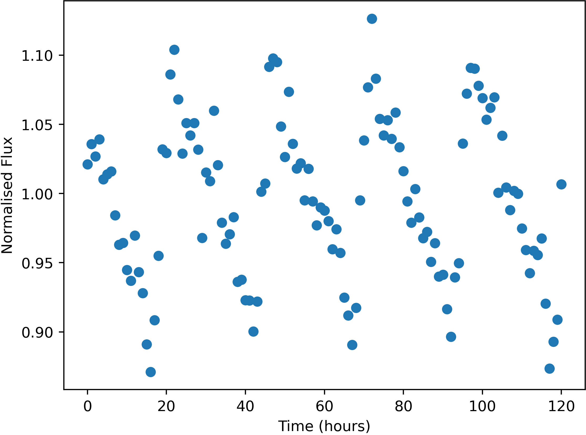

Some stars in the sky were found to change in apparent brightness over time, usually following a periodic trend.

Example of a variable star lightcurve - star FrontS168445
Units of the variable data are:
Uncertainties in this data (one standard deviation) are:
Here is a list of the flashes detected, with their approx. positions and number of photons detected. Positions are given by where they would appear in the relevant wide-field camera image. Positions are only accurate to 0.05 degrees (one standard deviation).
The X-Ray camera is sensitive to burts of more than 174 photons only.
| Name | Direction | X | Y | Photon-Count |
|---|---|---|---|---|
| FE01 | Front | -8.74 | -11.27 | 363 |
| FE02 | Left | 16.21 | -28.40 | 405 |
| FE03 | Left | -21.51 | 12.13 | 765 |
| FE04 | Top | 1.40 | 2.43 | 919 |
| FE05 | Back | -17.16 | -14.42 | 2929 |
| FE06 | Bottom | 41.16 | 10.77 | 524 |
| FE07 | Bottom | -39.79 | 13.67 | 712 |
| FE08 | Front | -12.56 | 7.76 | 914 |
| FE09 | Left | -21.82 | 12.22 | 811 |
| FE10 | Right | 37.89 | -0.75 | 364 |
| FE11 | Top | -36.32 | -19.52 | 1444 |
| FE12 | Left | 27.14 | -35.80 | 1642 |
| FE13 | Left | -31.74 | 21.05 | 62964 |
| FE14 | Front | -40.89 | 8.40 | 736 |
| FE15 | Front | 27.49 | 16.36 | 479 |
| FE16 | Left | 33.07 | -32.88 | 589 |
| FE17 | Top | 17.43 | 1.42 | 21802825037 |
| FE18 | Left | -1.43 | -10.21 | 876 |
| FE19 | Left | -1.77 | -9.99 | 909 |
| FE20 | Front | 40.72 | 16.67 | 377 |
| FE21 | Front | -13.15 | 7.66 | 897 |
| FE22 | Left | -6.79 | 18.20 | 381 |
| FE23 | Right | -15.39 | -41.01 | 1855 |
| FE24 | Top | 13.26 | -39.62 | 2347 |
| FE25 | Top | 1.60 | 10.83 | 395 |
| FE26 | Top | 12.65 | -8.50 | 285 |
| FE27 | Top | -17.86 | -27.73 | 304 |
| FE28 | Bottom | 8.30 | -38.48 | 675 |
| FE29 | Back | -4.99 | 37.61 | 5452 |
| FE30 | Right | -3.72 | 16.03 | 332 |
| FE31 | Top | 4.68 | -40.70 | 925 |
| FE32 | Bottom | 4.59 | 9.98 | 431 |
| FE33 | Top | 4.49 | -8.87 | 464 |
| FE34 | Left | 16.39 | -28.69 | 391 |
| FE35 | Bottom | -30.98 | -20.41 | 666 |
| FE36 | Top | -1.76 | -44.66 | 816 |
| FE37 | Left | -6.24 | 17.54 | 358 |
| FE38 | Top | 26.11 | 5.19 | 333 |
| FE39 | Bottom | 6.13 | -4.84 | 2903 |
| FE40 | Top | -16.94 | 6.28 | 463 |
| FE41 | Bottom | 32.75 | 34.22 | 543 |
| FE42 | Left | 8.53 | -14.64 | 6222 |
| FE43 | Right | -35.77 | 6.04 | 507 |
| FE44 | Bottom | -11.67 | 27.60 | 368 |
| FE45 | Front | -5.79 | -3.99 | 5785791 |
| FE46 | Top | 24.76 | -36.34 | 344 |
| FE47 | Back | 34.24 | 28.42 | 1066 |
| FE48 | Back | -18.27 | -34.59 | 1619 |
| FE49 | Front | -41.16 | 27.10 | 428 |
| FE50 | Left | -32.21 | -11.29 | 481 |
| FE51 | Bottom | 41.61 | -26.49 | 493 |
| FE52 | Bottom | 41.42 | -26.39 | 579 |
| FE53 | Front | 3.89 | 25.30 | 340 |
| FE54 | Front | 36.91 | 12.29 | 434 |
| FE55 | Front | -10.39 | -27.70 | 903 |